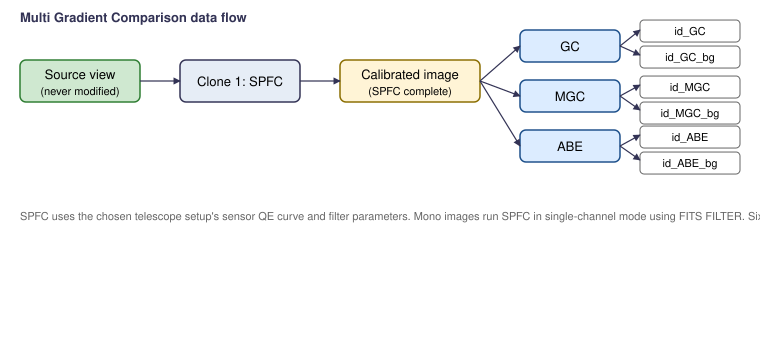

Scripts > EGo > Multi Gradient Comparison
Runs three different gradient-removal processes on independent clones of a single calibrated image and shows you the corrected output and the background model from each. Lets you pick the best one for the target without committing to a single tool.

SpectrophotometricFluxCalibration (SPFC) on the
clone — the prerequisite for MultiscaleGradientCorrection.
SPFC uses the chosen telescope setup's sensor QE curve and
filter parameters (broadband brand for LRGB/RGB; narrowband
wavelength and bandwidth for SHO/HOO/…). Mono images
run SPFC in single-channel mode driven by the FITS
FILTER keyword.GradientCorrection (GC),
MultiscaleGradientCorrection (MGC), and
AutomaticBackgroundExtractor (ABE). Keeps both the
corrected output and the gradient/background model from each.| Suffix | Content |
|---|---|
<id>_GC | GradientCorrection result |
<id>_GC_bg | GC background model |
<id>_MGC | MultiscaleGradientCorrection result |
<id>_MGC_bg | MGC background model |
<id>_ABE | AutomaticBackgroundExtractor result |
<id>_ABE_bg | ABE background model |
Six output windows in total. None are saved to disk.
FILTER keyword.Part of the EGo PixInsight script set. PCL License 2.0.